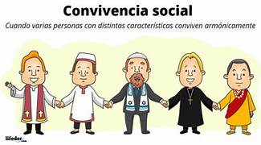
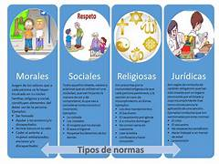

Introducción
Las normas son reglas que orientan el comportamiento humano dentro de una sociedad. Estas permiten establecer límites claros entre lo permitido y lo prohibido, favoreciendo la convivencia pacífica.
Las normas no solo regulan conductas individuales, sino que también fortalecen la estructura social y la estabilidad del Estado.
Tipos de Normas
Existen distintos tipos de normas según su origen, su nivel de obligatoriedad y el ámbito en que se aplican. Cada tipo cumple una función específica dentro de la sociedad.
Conocer los tipos de normas ayuda a comprender por qué algunas conductas tienen consecuencias legales mientras que otras solo generan desaprobación social o moral.
- Jurídicas: Obligatorias y respaldadas por la ley.
- Morales: Basadas en valores personales.
- Sociales: Aceptadas por costumbre.
- Religiosas: Derivadas de creencias espirituales.

Figura 1: Clasificación de las normas sociales

Figura 2: Las normas como base de la convivencia
Las Normas y la Convivencia
Sin normas, la convivencia social sería caótica e impredecible. Las reglas permiten que las personas se relacionen con expectativas claras sobre el comportamiento de los demás, generando confianza y orden.
Cada tipo de norma actúa en un ámbito distinto: algunas regulan la vida pública, otras la esfera privada, y otras el ámbito espiritual o comunitario.
Ejemplos prácticos
Pagar impuestos es una norma jurídica; respetar a los demás es una norma moral; hacer fila es una norma social.
Desarrollo del Tema
Las normas son el fundamento de cualquier sociedad organizada. Su existencia no es arbitraria, sino que responde a la necesidad de regular la vida en común y garantizar que todos los miembros de una comunidad puedan ejercer sus derechos sin afectar los de los demás.
Normas jurídicas y su importancia
Las normas jurídicas son las más formales y de mayor alcance, ya que están respaldadas por el Estado y su incumplimiento puede acarrear sanciones legales. Se establecen a través de leyes, reglamentos y constituciones, y su cumplimiento es obligatorio para todos los ciudadanos sin excepción, independientemente de sus creencias o valores personales.
Normas morales y sociales
Las normas morales y sociales, aunque no tienen respaldo legal, son igualmente importantes para la convivencia. Las morales nacen de la conciencia individual y los valores éticos de cada persona, mientras que las sociales son acuerdos tácitos que una comunidad adopta con el tiempo por tradición o costumbre. Su violación no genera sanciones legales, pero sí puede provocar rechazo o desaprobación del entorno.
Ejemplos Visuales
Ejemplo 1: Normas jurídicas
Ejemplo 2: Normas morales
Ejemplo 3: Normas sociales y costumbres
Conclusión
Las normas son indispensables para la vida en sociedad. Sin importar su tipo —jurídicas, morales, sociales o religiosas—, todas contribuyen a establecer un orden que permite la convivencia pacífica y el respeto entre los miembros de una comunidad.
Comprender las normas y su función nos ayuda a ser ciudadanos más conscientes, responsables y comprometidos con el bienestar colectivo y la vida en comunidad.